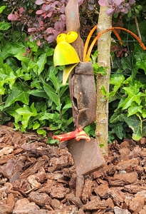

Dienstverband-spoednummers
Bij spoed belt u altijd eerst dit nummer
Bij spoed/ernstig ziek huisdier belt u gewoon 06-455 60 220. U hoort dan op de voicemail bij wie u terecht kunt of rechtstreeks van mij. De spoeddienst is enkel voor klanten van mijn praktijk en onderstaande praktijken. Vakantiegasten kunnen ook van deze spoeddienst gebruik maken.
Door de week gaat de avond-/spoeddienst elke dag in vanaf 17.00 uur, dus ook op de maandag en vrijdag.
Dienstrooster deze periode
Tijdens 13 t/m 26 juli belt u voor spoed gezelschapsdieren na 17u tot 9u en in het weekend onderstaande praktijken:
| zondag 12 juli tot maandag 13 juli 9u | DAP Gulpen |
|---|---|
| maandag 13 juli 17u tot dinsdag 14 juli 9u | DAP Gulpen |
| dinsdag 14 juli 17u tot woensdag 15 juli 9u | DAP De Dikke Kater |
| woensdag 15 juli 17u tot donderdag 16 juli 9u | DAP Animosa |
| donderdag 16 juli 17u tot vrijdag 17 juli 9u | DAP Hulsberg |
| vrijdag 17 juli 17u tot maandag 20 juli 9u | DAP Voerendaal |
| maandag 20 juli 17u tot dinsdag 21 juli 9u | DAP De Kater |
| dinsdag 21 juli 17u tot woensdag 22 juli 9u | DAP Hulsberg |
| woensdag 22 juli 17u tot donderdag 23 juli 9u | DAP Gulpen |
| donderdag 23 juli 17u tot vrijdag 24 juli 9u | DAP Gulpen |
| vrijdag 24 juli 17u tot maandag 27 juli 9u | DAP De Dikke Kater |
Voor spoed schaap/geit/alpaca/hobby-varken belt u in bovenstaande periode zowel tijdens openingstijden als na openingstijden Lizzy op telefoonnummer 06-11 14 37 37.
Praktijken in het dienstverband
Het huidige dienstverband waar ik deel van uitmaak bestaat uit de onderstaande praktijken:
| Dierenkliniek Animosa, Spaubeek | 046-206 04 00 |
|---|---|
| Dierenkliniek Brunssum / De Dikke Kater, Brunssum | 045-200 112 |
| Dierenartspraktijk Gulpen en Margraten, Gulpen | 043-450 18 78 |
| Dierenarts Hulsberg, Hulsberg | 045-888 37 74 |
| Dierenartspraktijk Voerendaal, Voerendaal | 045-575 19 99 |
